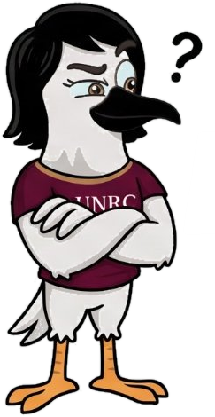

Por favor, introduce tu nombre completo y responde las siguientes 10 preguntas.
1. ¿Qué representa el sombrero blanco en esta técnica?
2. ¿Qué representa el sombrero rojo?
3. ¿Qué representa el sombrero negro?
4. ¿Qué representa el sombrero amarillo?
5. ¿Qué representa el sombrero verde?
6. ¿Qué representa el sombrero azul?
7. ¿Cuántos sombreros integran la técnica?
8. ¿Quién es el creador de la técnica de los sombreros para pensar?
9. ¿Cuál es el principal beneficio de utilizar esta técnica?
10. ¿En qué ámbitos es más común aplicar la técnica de los sombreros para pensar?